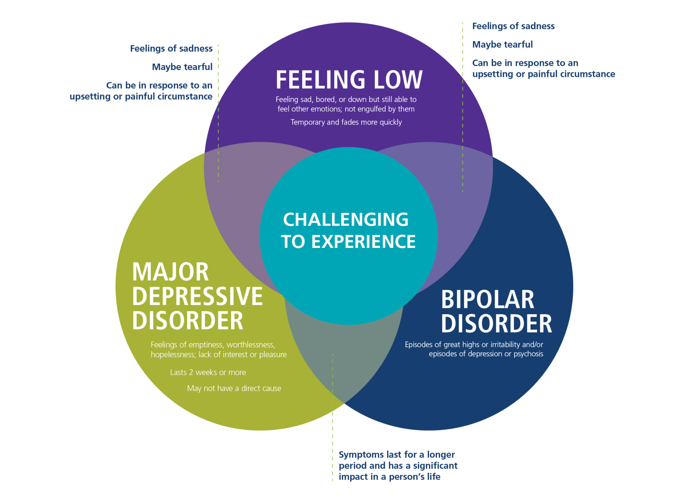
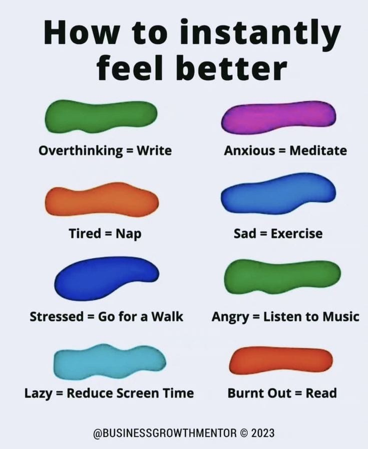
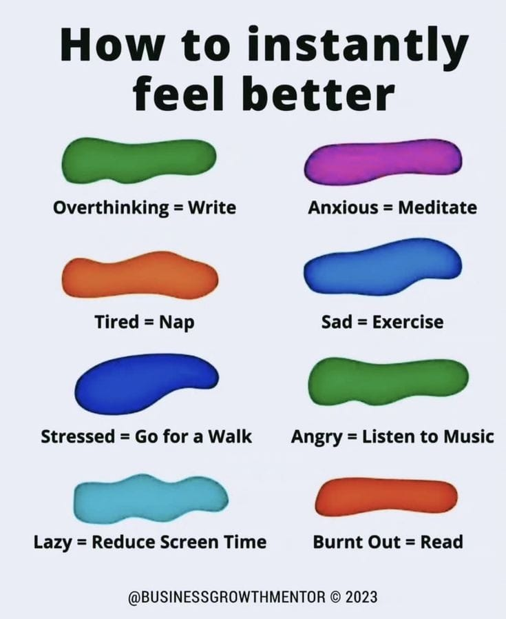

Understanding Mental Health Conditions
Is it just a bad day?
Depression
Depression is a common but serious mood disorder that affects how you feel, think, and handle daily activities. Symptoms include persistent sadness, loss of interest in activities, changes in appetite or weight, difficulty sleeping, and feelings of worthlessness. Treatment options include therapy, medication, and lifestyle changes.
What depression looks like
 

THE difference BETWEEN Anxiety AND Depression